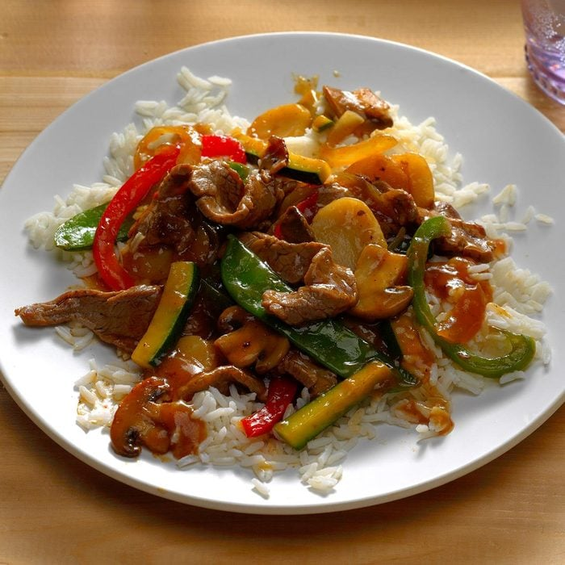

Pepper Steak with Squash Recipe

Ingredients needed:
- 8 ounces tenderized beef
- 1 tablespoon
- 1 teaspoon olive oil
- 6 ounces green pepper
- 6 ounces yellow bell pepper
- 8 ounces zucchini
- 8 ounces onion
- 2 cloves garlic
- 1/2 cup beef broth
- 2 tablespoons soy sauce
- 2 tablespoons
- 2 teaspoons corn starch
- 16 snow peas
- 1 ounce bean sprouts
- boil-in-bag rice
Instructions to make Pepper Steak with Squash :D
-
Heat water to boiling in a large saucepan for rice.
-
Brown beef in olive oil over medium heat.
-
Dice peppers, zucchini and onion and add to beef in skillet.
-
Add garlic, stir to mix and reduce heat to low.
-
Mix together beef broth, soy sauce and cornstarch. Pour over beef and peppers.
-
Increase heat to medium and stir well.
-
Cook rice in boiling water according to package directions.
-
Add snow peas and bean sprouts to beef and pepper mixture. Cook until sauce thickens and snow peas are tender.
-
Serve over rice.